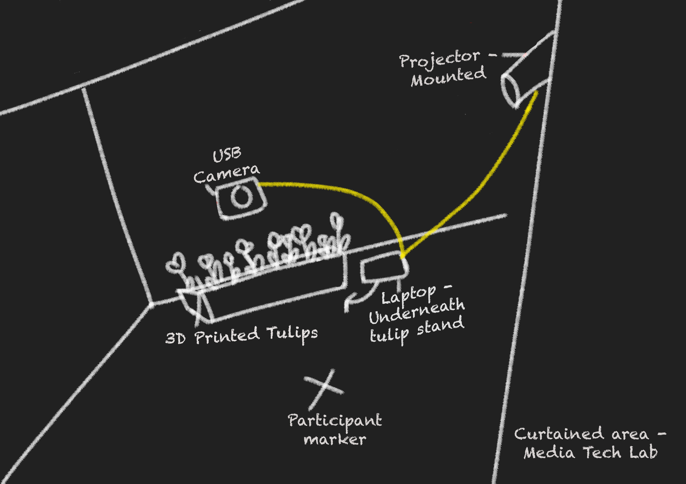
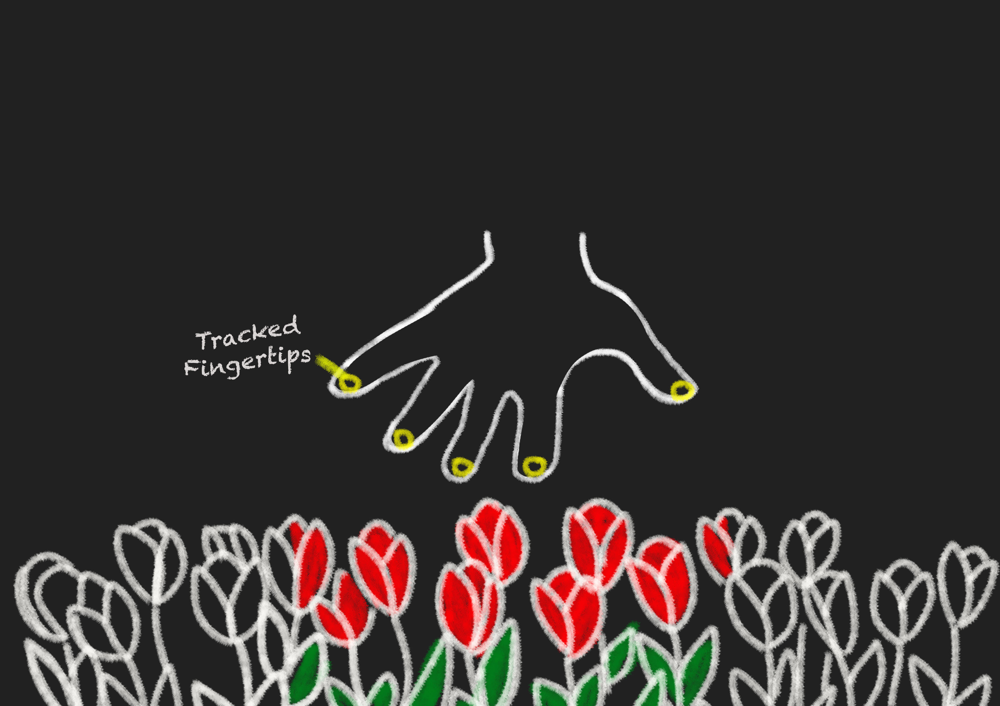
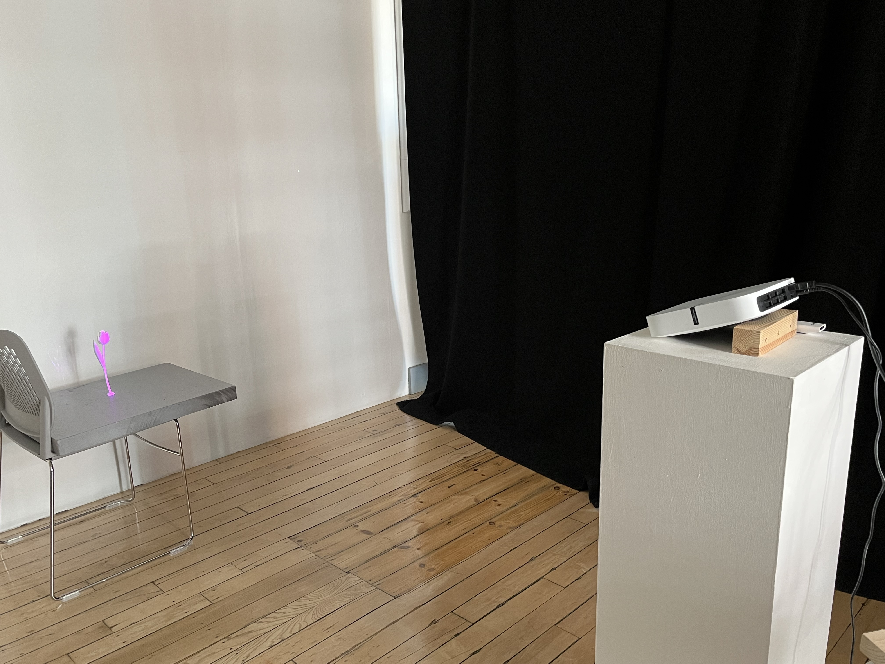
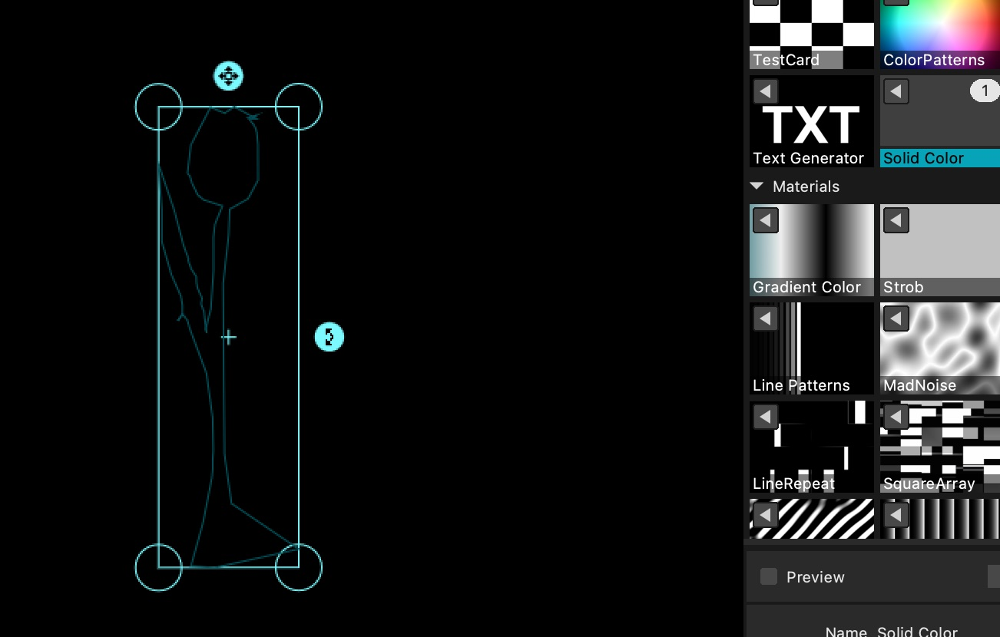
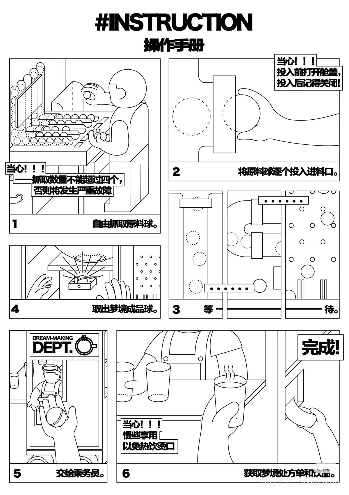
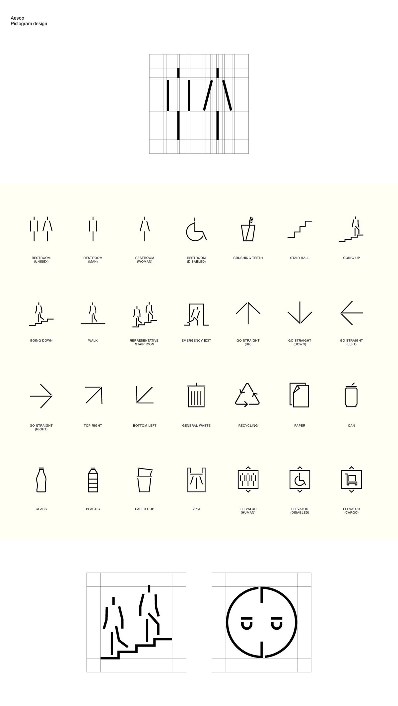
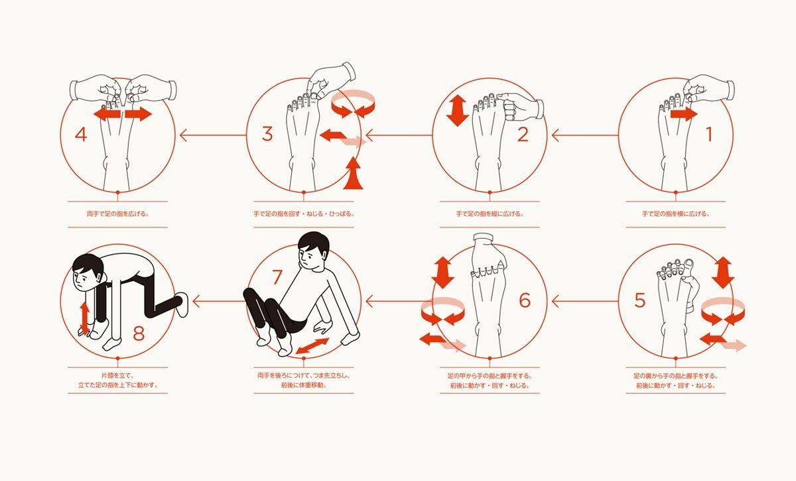

Concept sketch video
1. Setup
Early into the project I consulted Hannah and Bevis in the Creative Tech Lab to learn more about how I could approach my concept from a technical standpoint. They were able to give me an indication of the hardware and set up I would need to make my concept possible. I was then able to further refine my concept with these parameters in mind.

Setup diagram
After discussing it with staff in the CTL, I drew out this rough diagram as a reminder of the equipment and placement for when I come to set up the work.
2. Touch Designer: Hand Tracking
While experimenting with the Media Pipe Plugin in Touch Designer I followed a tutorial by Torin Blakensmith which demonstrated how to turn the user's finger into a paintbrush and leave a watercolour-like trail when moving their hand. This method utilised a feedback operator from the Touch Designer palette as well as several texture and channel operators.
Torin Blankensmith (2025). Watercolor Hand Tracking Brush in TouchDesigner Tutorial. [online] YouTube. Available at: https://www.youtube.com/watch?v=IATX3biLoZg
After doing this, I realised I could make some alterations so that this would work for my concept:
Touch Designer Network Screenshot
First, I used select channel operators to track the X, Y and Z position of all five fingertips of hand 1 (the first hand that is recognised by the media pipe plugin).The X and Y position control the position of the colour. I used the Z position to ensure that the handtracking was only registered from a specified distance. This is to prevent there from being any colour visible when the work is not in use.
I chose to track the five finger tips as I figured that the most intuitive way to engage with the work would be to wave your hand, palm down, over the tulips. A USB camera would be positioned adjacent to the user, transmitting the data into Touch Designer. Bearing this in mind, the tips of all five fingers seemed the best point to use as a reference.

Sketch illustrating this.
3. Touch Designer: Changing Colours
In the original water colour hand tracking project, the colour is predetermined by combining the circle top with high feedback (the paint) and an image or noise texture operator in a Multiply TOP.
I wanted to make it so the user could control the colour of the tulips, referencing tulip breeders. Initially I tried making it so the X, Y and Z positions of the user's second hand were linked to the R G and B values of the circle's colour. This worked to an extent but had a few issues. Firstly, I wanted to avoid colours like green and grey as these did not accurately represent the colours of tulips and didn’t look particularly good. Additionally, I did not feel that using both hands in this manner was very intuitive. This led me to try a different approach.
Recording of first iteration of colour control
Media Pipe comes with a range of helper channels which track things like the distance between pinch point (thumb and index finger tip). I eventually decided to use this to control the flower colour as the motion of pinching your thumb and index finger together, to me, resembled the act of picking a flower.
In order to avoid unwanted colours I resolved to use a range of constant operators with different bright colours and fed these into the input of a switch operator. The colours are cycled through by first using a series of channel operators to register when thumb and index finger tip touch by defining the minimum distance between the fingers and triggering a change when this distance is registered. I fed this into the input of a count CHOP clamped and a maximum of 4; this is the reference CHOP for the Switch index parameter. By using this data as a reference for the switch index, each time the user makes a pinching motion with their fingers, they switch between the five colours.

Touch Designer Network Screenshot
I overlaid the visuals from the Switch operator underneath a green vertical ramp TOP which ultimately created the appearance for a green stem and colour changing flower petals.

Touch Designer Network Screenshot
Recoding of touch designer responsive visuals
4. 3D Sculpture
Meanwhile, as I was working on the Touch Designer network for this project, I was getting a tulip prototype 3D printed by Stephen in the 3D Fabrication Workshop. For the purposes of saving time I sourced an open source STL file for a tulip model which I had printed:
Printables.com. (2024). Beautiful Tulip With Stem - Best Valentine’s Day Gift. [online] Available at: https://www.printables.com/model/681635-beautiful-tulip-with-stem-best-valentines-day-gift
5. Prototyping and User Testing
Once I had a tulip and main network functioning in Touch Designer, I contacted the Creative Tech Lab so that I could set up a mock version of the final project.

Photograph from the CTL
In order for the projected visuals to be aligned with the tulips models, I needed to use projection mapping. For this, I used the software MadMapper. At the end of the network in Touch Designer, I fed the final output into a Syphon Spout Out component. This is a component that can share the visuals in Touch Designer locally with other applications, including Madmapper.
I aligned the projectionion to the Tulip model using the mask feature in Madmapper:

Screenshot of mask in Madmapper
Recording of prototype
Having had the opportunity to observe the concept more tangibly I was able to make a few observations. I realised that when I constructed the tulip model I stuck the leaf too high up so made a note to adjust this for future models. I also got to watch others engage with the work and this was particularly insightful. I observed that people had a tendency to move their hands quite quickly and this caused the hand tracking to stagnate slightly:
Video demonstrating delayed hand tracking issue
I found that implementing a Lag CHOP helped with this to an extent. However, if the user moves their hand really fast, there is still some delay. I deduced that this was being exacerbated by the feedback component. By using feedback, colours leave a soft trail before disappearing completely and artistically, I preferred this to the alternative. I resolved that I could either significantly reduce or remove altogether the feedback or provide written or visual instructions at the time of exhibiting the work so that people know to move their hand more gradually. As I did not want to lose the feedback, I began considering how I could design signage for the work that would not be too intrusive.
At this point I was starting to consider more how I would exhibit the final work. Because I was projected onto the tulips, it was necessary for these to be white. For better cohesion, I decided that I would make everything else white to reference the ‘white cube’ contemporary art ideology and have a bigger contrast between active and inactive parts of the work.

Final sculpture constructed
When considering signage for the work, this all-white aesthetic led me to look into more minimalist points of reference, for instance Scandinavian and Japanese wayfinding and instructional graphics:
Inspiration





Info graphic reference images
Design

Info Graphic for exhibting project
I decided on the name “What We Made Grow” as the title for this work. It reflects the relationship between nature and human intervention; referencing back to the history of tulip hybridisation. The name felt equally suitable because the work depicts organic forms using contemporary mediums (software and 3D printing), highlighting the conflicting truths that something can be both organic, and manmade.
6. Sound
As mentioned on the previous page, with the help of Zhou Zhou, I was able to transmit hand tracking data into the Ableton live and use it as a midi input to control sound parameters. I included this method in the network for this project. As an extension of the Tulip project, I can optionally include this element to add a further layer of interaction. However, given that I will be exhibiting this work at Gradfest and sharing the space with others, I will probably opt to not include the sound element on this occasion. This is because I am aiming for a fairly minimal and intuitive setup and the inclusion of headphones would work against this.
7. 2nd Hand Integration
I originally planned for the work to be single user and use one hand. However, it occurred to me that multiple people may try to engage with the work at the same time or someone might be inclined to try using both hands. To prepare for this scenario, I ended up adding 2nd hand controls. I achieved this by collapsing the entire network down into a custom base component, duplicating it and substituting every instance of H1(hand 1) for H2(hand 2). This refers to the second hand recognised by Media Pipe.
I fed both of these base components into an Over TOP, followed by the Syphon Spout Out TOP which transmits the visuals to Madmapper. I don’t plan to actively encourage multiple user or multiple hand engagement however, I feel better knowing that there is support for this engagement in place to prepare for the eventuality that people chose to try this.

Full Network, Touch Designer Network Screenshot

Touch Designer Network Screenshot
2nd Hand Integration Recording
One of the limitations of Media Pipe hand tracking is it only tracks a maximum of two hands so I cannot expand on this any further. This is partly why I am choosing not to actively encourage multiple users/hands in the signage as this could create confusion where there are 3-4 hands in the frame, causing the tracking to rapidly switch between detected inputs, creating instability within the interaction and unintended visual behaviour.
8. 2nd Iteration of Prototyping/Testing
On the lead up to submission I had the opportunity to set up the piece for a second time in the Creative Tech Lab. By this point I had corrected the leaf placement and printed some more tulips to get a better idea of the visual effect. I also sourced and painted a planter box for the tulips to sit in, making this mock setup much closer to the original concept sketch.
Video recording in the CTL during testing
Due to the limited time, I was unable to align the projections perfectly. I would hope to be able to execute this better at the time of actually exhibiting the work. It is really challenging to avoid having any visible projection on the wall. At this stage, I am considering the possibility of installing something behind the work, other than a blank white wall, that will make the slivers of visible projection less noticeable. I know, for instance, that additional black curtains can be installed in the CTL. I may inquire about whether this will be possible.
9. Final Thoughts
Overall, I am happy with the outcome of this project as I feel that I have fulfilled my own brief in terms of what I hoped to achieve. Prior to exhibiting this work at Gradfest, there are a few finer details to sort out however, with respect to the interactive experience project assignment, I think that I have reached a successful conclusion.
Moving into 3rd year, I have already begun to have conversations with the 3D fabrication workshop about expanding on this work in terms of scale. I would really like to revisit this concept on a larger scale and dedicate more time to develop the interactive sound element of the work.
Beyond this, I am eager to continue to develop work which intersects Touch Designer with interactive mediums as I hope to develop my portfolio within this field of practice.